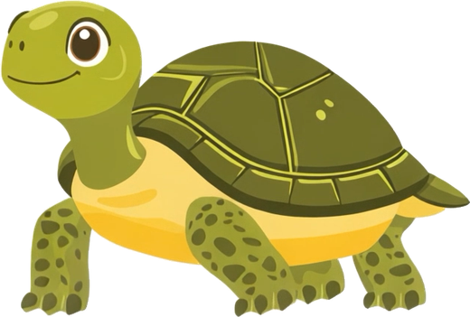
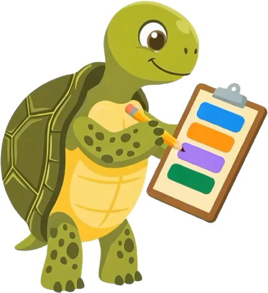
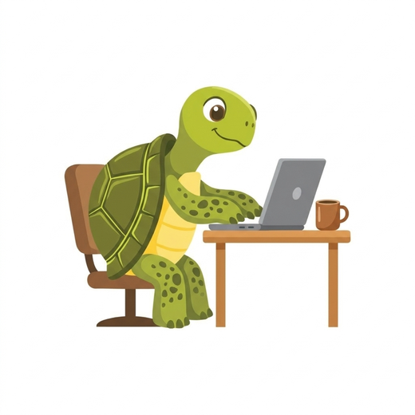
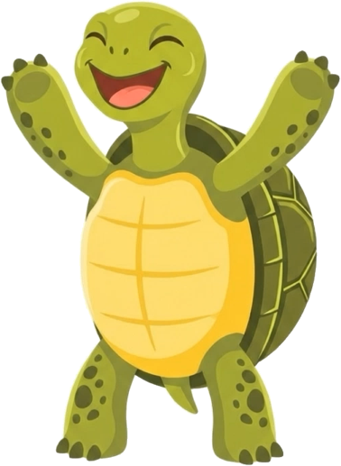

How much of your day is actually yours?
Set your day below. Hourtle takes out sleep, work and chores, and shows what's left for the thing you care about.
Sleep
Work
Chores
Yours
For iPhone. Free for two weeks, then a small yearly plan.

Start a timer and your tortoise sets off for the flag. It only moves when you spend time on what matters.

Plan a weekday and a weekend
Answer four quick questions once. Hourtle works out your free time for each kind of day and picks the right plan every morning.

Block the apps that steal it
Choose the apps that pull you away. They stay blocked while your timer runs and open again when you pause.

Keep a streak, win trophies
Thirty minutes a day keeps your streak alive. Miss a day and you can restore it. Milestones earn trophies for the shelf.